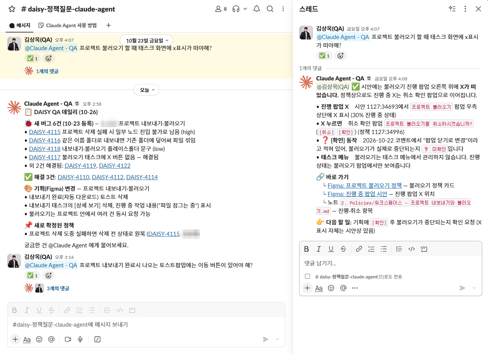

QA 지식관리시스템(CASE-01)에 쌓인 정책 · 이슈 · 기획을 근거로, 개발자든 기획자든 Slack에서 멘션 한 번으로 물어보고 스레드로 답을 받는 Claude 기반 질문 에이전트입니다. 답에는 항상 원본 링크가 붙고, 자료에 없으면 “모른다”고 답합니다.
지식을 한 곳에 모아도 Obsidian · Git을 쓰는 QA만 볼 수 있으면, “이거 정책이 뭐예요?”라는 질문은 여전히 QA 한 사람에게 몰립니다.
팀이 이미 있는 Slack에 읽기 전용 에이전트를 붙이고, 답 형식 · 권한 · “모른다” 규칙을 설계해 Linux 서버에서 무인으로 운영했습니다.
누구나 멘션 한 줄로 약 15초 안에 근거 링크가 붙은 답을 받고, 매일 아침 팀 채널에 새 버그 · 기획 변경 · 확정 정책이 공지됩니다.
역할 · 단독 설계 · 구현 · 서버 배포 · 운영

위 스레드에서 “불러오기 할 때 태스크 화면에 X 표시가 떠야 해?”라는 질문에, 봇은
Figma 시안 위치와 정책 카드를 근거로 답하면서도, 댓글에 남은 “팝업 닫기로 변경”이 실제 중단인지는
❓ 미확인으로 남기고 기획에 확인하라는 다음 할 일을 제시합니다.
❓ 미확인누구나 말을 걸 수 있는 봇이기 때문에, 무엇을 할 수 있는지보다 무엇을 못 하게 할지를 먼저 정했습니다.
파일 수정 · 외부 쓰기 · 커넥터를 모두 차단하고, 조회 스크립트 하나만 허용했습니다. 누가 무엇을 요청해도 저장소와 ClickUp은 바뀌지 않습니다.
“티켓 만들어줘”, “TC 고쳐줘” 같은 요청은 🙅로 거절하고 담당자를 안내합니다. 쓰기는 승인 흐름이 있는 동기화 쪽에서만 일어납니다.
ClickUp · Figma는 API 토큰으로 조회해 AI 계정 인증과 분리했습니다. AI 세션이 만료돼도 조회는 계속됩니다.
질문 응답은 판단보다 조회와 요약이 중심이라 Haiku를 써서 약 15초 안에 답하게 했습니다.
매일 아침 동기화가 끝나면 팀 채널에 새 버그 · 해결 · 기획(Figma) 변경 · 새로 확정된 정책만 짧게 올립니다. QA 내부 정보(승인 대기, TC 공백 등)는 뺍니다.
서버 Python 3.8에 없는 문법을 써서 봇이 뜨자마자 죽었습니다.
→ 호환 수정 + CI에 최소 버전 검사 추가로 재발 방지.
Linux에는 python 명령이 없었고, 라이브러리는 가상환경에만 있었습니다.
→ 실행 환경별 명령을 봇이 결정해 AI에 전달하고, 허용 목록에 추가.